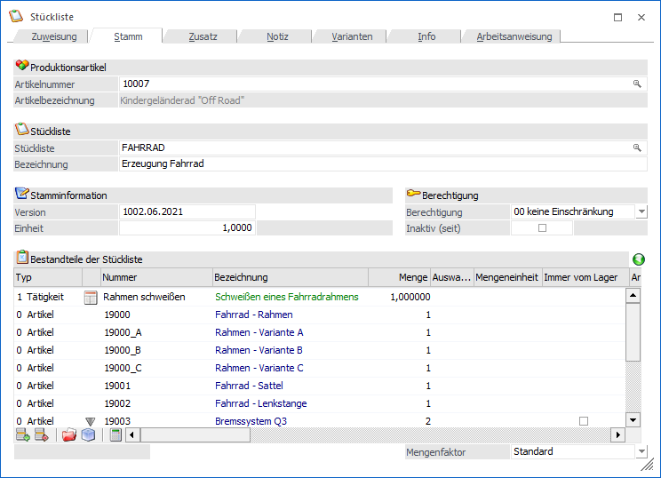
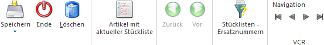
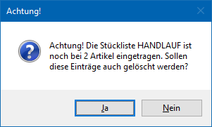

Die Definition der Stücklisten erfolgt im Programmbereich
1 WinLine PPS
1 Stammdaten
1 Stückliste

Der Stücklistenstamm ist in mehrere Register unterteilt, welche in den nachfolgenden Kapiteln detailliert beschrieben werden:
ü Register "Stamm"
In dem Register
"Stamm" erfolgt die Anlage der Stückliste an sich, d.h. die Definition der
Stücklistenbestandteile.
ü Register "Zusatz"
In dem Register
"Zusatz" können zusätzliche Einstellungen zur Stückliste getroffen werden.
ü Register "Notiz"
In dem Register
"Notiz" können zusätzliche Texte zu der Stückliste erfasst werden.
ü Register "Varianten"
In dem
Register "Varianten" erfolgt die Grunddefinition der Varianten der
Stücklistenebene.
ü Register "Info"
In dem Register
"Info" werden u.a. zusätzliche Informationen zur Stückliste angezeigt.
ü Register "Arbeitsanweisung"
In dem
Register "Arbeitsanweisung" können einzelne Archivdokumente zu einer
Arbeitsanweisung zusammengefasst werden.
Buttons

Ø Ok / Speichern / Speicherung und Abgleichen
Abhängig vom aktuellen Register stehen unterschiedliche Funktionen zur Verfügung.
ü Ok / Speichern
Durch Anwahl des
Buttons "Ok", "Speichern" oder der Taste F5 wird die Stückliste gespeichert
ü Speichern und Abgleichen
Durch
Anwahl dieses Buttons werden die Änderungen zunächst gespeichert und
anschließend direkt das Fenster "Änderungen in Stücklisten" geöffnet (aktuelle
Stückliste wird automatisch vorgeschlagen). Mit dessen Hilfe können die
getätigten Änderungen (Komponenten bzw. Tätigkeiten) mit den Stücklisten von
bestehenden Produktionsaufträgen abgeglichen werden.
Ø Ende
Durch Anwahl des Buttons "Ende" bzw. der Taste ESC wird das Fenster geschlossen und alle nicht gespeicherten Änderungen verworfen.
Ø Löschen
Durch Drücken dieses Buttons kann nach erfolgter Sicherheitsabfrage die Stückliste gelöscht werden.
Hinweis
Ist die zu löschende Stückliste in einem Artikel hinterlegt, so erscheint eine entsprechende Meldung.

Ø Artikel mit aktueller Stückliste
Durch Anwahl dieses Buttons wird das Fenster "Stücklisten-Info" geöffnet. In diesem wird angezeigt, in welchen Artikeln die aktuelle Stückliste hinterlegt wurde.
Ø Archivsuche (nur Register "Arbeitsanweisung")
Mit Hilfe dieses Buttons kann eine Archivsuche für die aktuelle Stückliste gestartet werden, wobei über die Beschlagwortung "088 - Stücklistennummer" gesucht wird.
Ø Stücklistenebene Zurück / Vor
Wenn in der
aktuellen Stückliste Komponenten mit Stückliste (d.h. Handelsstücklisten- oder
Produktionsartikel) hinterlegt sind, dann kann in diese Stücklisten per
Doppelklick auf das Icon  gewechselt werden (siehe Tabelle
"Bestandteile der Stückliste"). Mit den Buttons "Zurück" bzw. "Vor" kann
anschließend zwischen diesen unterschiedlichen Ebenen gewechselt werden.
gewechselt werden (siehe Tabelle
"Bestandteile der Stückliste"). Mit den Buttons "Zurück" bzw. "Vor" kann
anschließend zwischen diesen unterschiedlichen Ebenen gewechselt werden.
Ø Stücklisten - Ersatznummern
Durch Anwahl dieses Buttons wird das Fenster Stücklisten - Ersatznummern geöffnet. In diesem können u.a. Stücklistenkomponenten angegeben werden, welche bei der Produktionsauftragsanlage (z.B. über die Produktionsvorbereitung bzw. während der Auftragserfassung) automatisch ersetzt werden sollen.
Ø VCR-Buttons
Über die so genannten VCR-Buttons kann durch Mausklick zwischen den einzelnen Stammdatensätzen (Stücklisten) geblättert werden.
ü  Damit kann die erste Stückliste angesprochen werden.
Damit kann die erste Stückliste angesprochen werden.
ü  Damit kann die vorherige Stückliste angesprochen werden.
Damit kann die vorherige Stückliste angesprochen werden.
ü  Damit kann die nächste Stückliste angesprochen werden.
Damit kann die nächste Stückliste angesprochen werden.
ü  Damit kann die letzte Stückliste angesprochen werden.
Damit kann die letzte Stückliste angesprochen werden.